Your Creative Hub
一個開放創新的社群
Fablab Taipei 台北自造實驗室是個對大眾開放的自造者空間，
一個讓各種創新點子實踐的場域。
任何人都歡迎來這裡自造自己的作品，
或是舉辦創新自造相關的活動及聚會，
分享自己的創意。
Fab Academy
如何製作幾乎任何東西
是由麻省理工學院位元與原子中心（Center for Bits and Atoms，簡稱CBA）主任尼爾‧格申斐德（Neil Gershenfeld）於麻省理工媒體實驗室（MIT Media Labs）所開設的課程。每年上半年在全世界的Fab Academy Node都可遠端參與同樣由Neil本人親自授課，內容完全相同的線上線下混成課程。
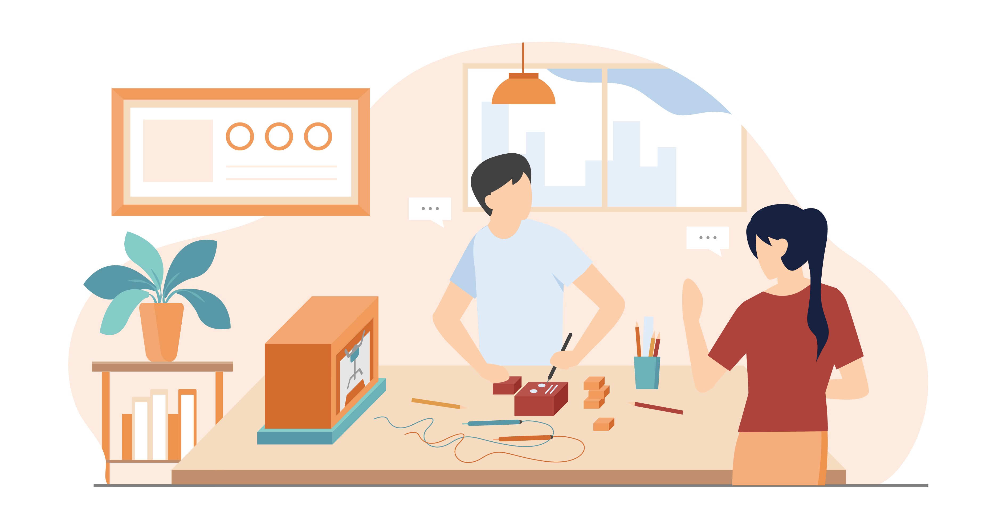
OpenSource Innovation
開源創新
開源是一種理念，相信資訊透明、公開分享更能有效創造影響力與價值，加速文化、藝術、科技發展。開源硬體除了提供原始設計檔案外，更包含詳細製作流程說明，讓任何人下載檔案後都能藉由數位製造工具的協助，複製或改製原本的創作，達成知識共享、跨時空協作的目的。
OUR EQUIPMENT
我們的設施
我們提供各種數位製造設備供大眾使用，並提供教學課程，在符合實驗室使用規則的條件下可以免費使用，使用者需自備材料及耗材，使用後，必須自行清潔環境及設備復原，並將所製造的垃圾自行帶走。
We offer a variety of digital manufacturing equipment for public use and provide instructional courses. Under compliance with laboratory usage rules, it can be used free of charge. Users are required to provide their own materials and consumables. After usage, users must clean the environment and equipment themselves and dispose of any generated waste.
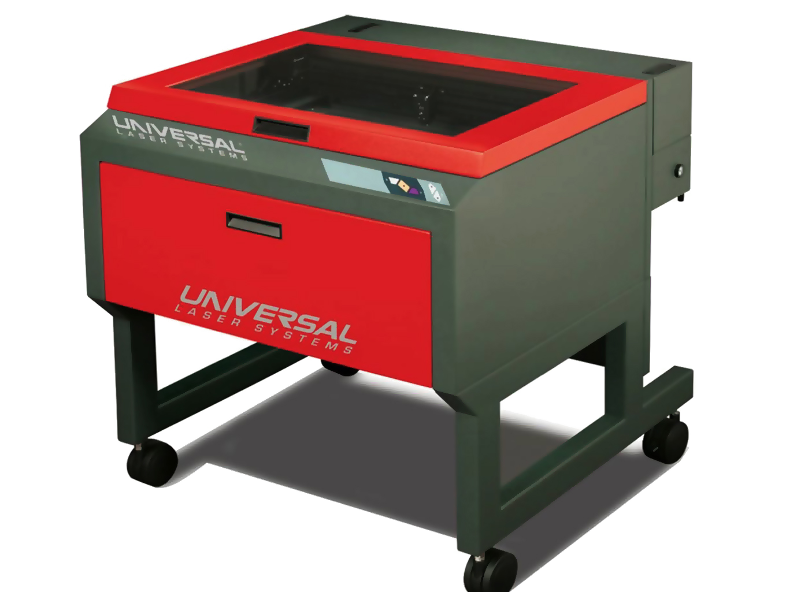
Laser Cutter 雷射切割機
UNIVERSAL VLS 4.60 50W
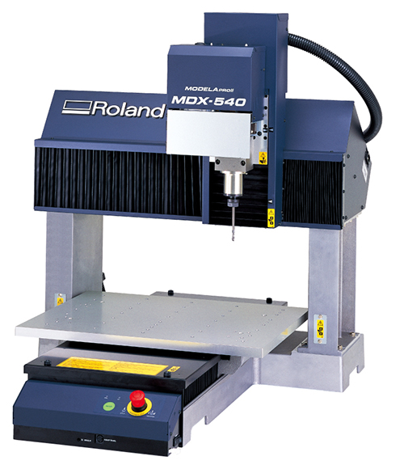
CNC 數控銑床
ROLAND MODELA MDX-540
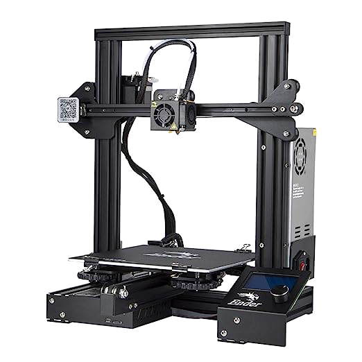
FDM 積層式3D印表機
CREALITY ENDER-3
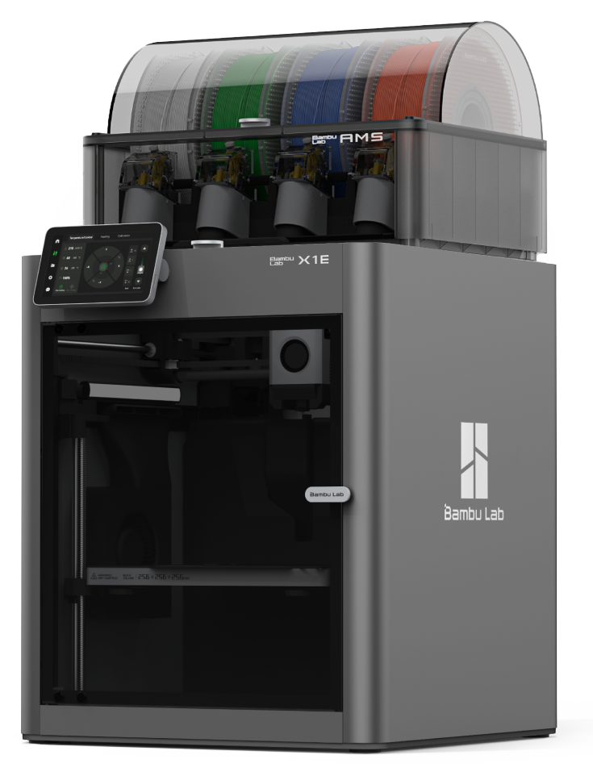
FDM 積層式3D印表機
Bambu Lab X1E
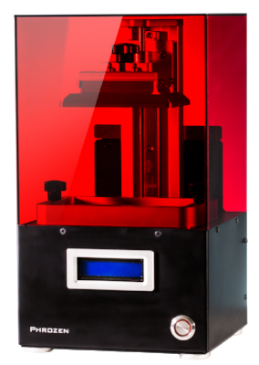
SLA 光固化3D印表機
PHROZEN MAKE
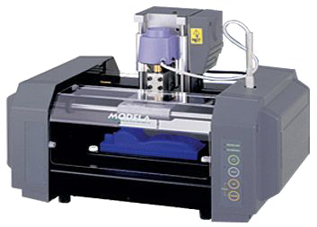
迷你CNC銑床
ROLAND MDX-20
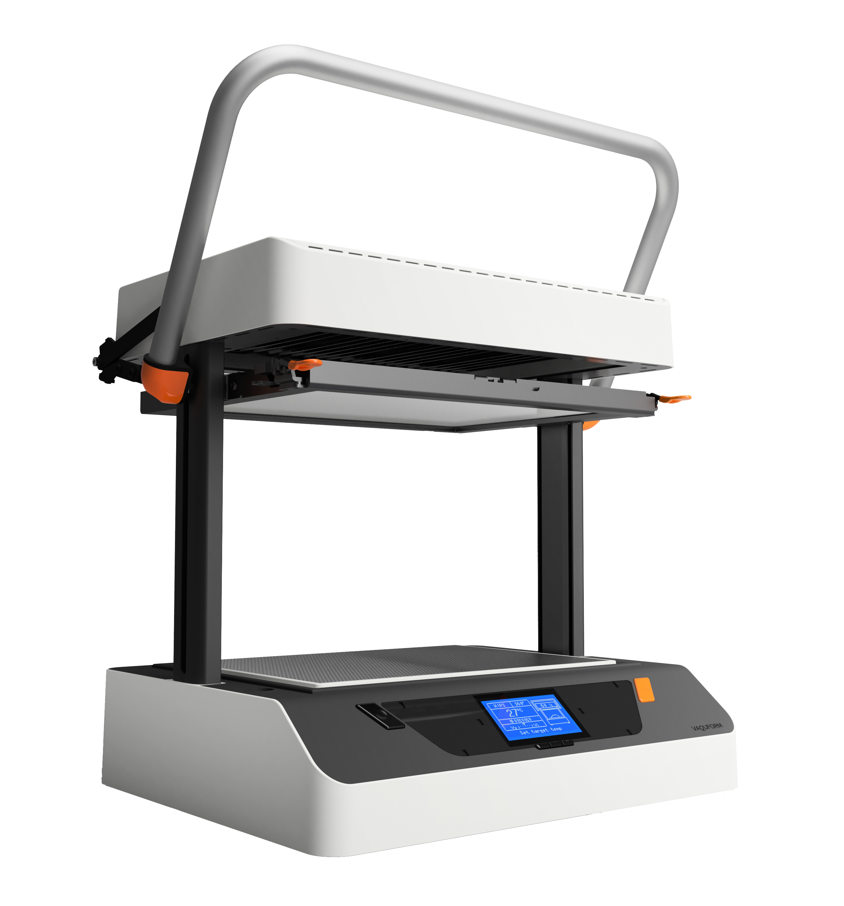
Vacuum Form Machine 真空成型機
VAQUFORM DT1
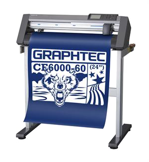
數位切紙機
GRAPHTEC CE6000-60
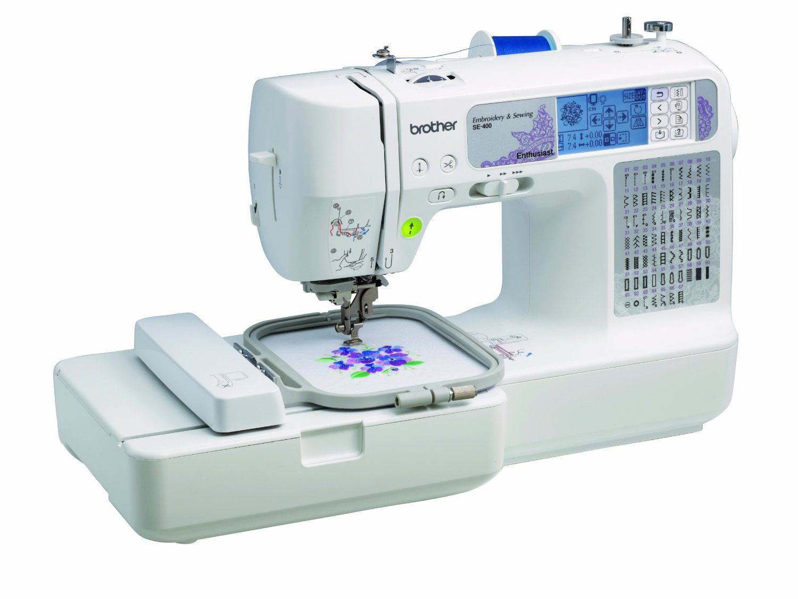
Embroidery Machine 數位縫紉機
BROTHER SE-400
Event Schedule
活動日程
以下為範例資料，實際活動請以官方公告為準。
範例
Open Lab 開放日
每週六 10:00-16:00（範例）
範例
雷射切割入門課（範例）
認識雷射切割機的安全規則與基本操作。
範例
3D列印工作坊（範例）
從建模到列印，完成第一件 3D 列印作品。
Class
課程
提供雷射切割、3D列印、CNC等設備教學課程，歡迎來信詢問：info@fablabtaipei.me
About Us
關於我們
FabLab是一個源自美國麻省理工學院MIT Center for Bits and Atoms的國際社群，目前在全球一百多個國家有超過2000多家開放實驗室。Fablab Taipei 於2013年5月成立，由台灣自造者協會營運，基地位於圓山花博園區內。
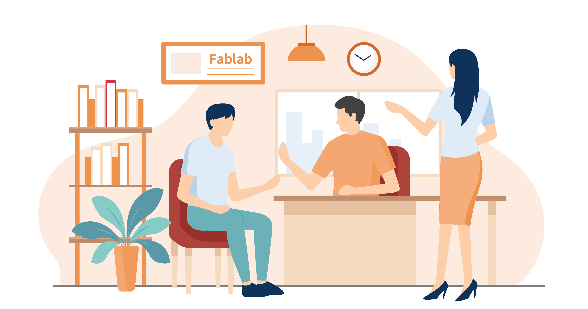
Our Location
如何找到我們
地址 Address
10491 台北市中山區玉門街1號（台北創新中心A室，圓山花博園區）
No.1 Yumen St., Zhongshan Dist., Taipei City
聯絡 Contact
- 電話 +886 2 2595 2322
- Email info@fablabtaipei.me